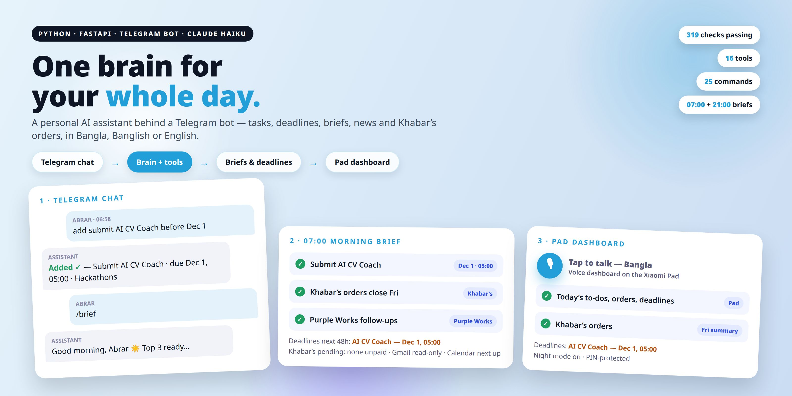
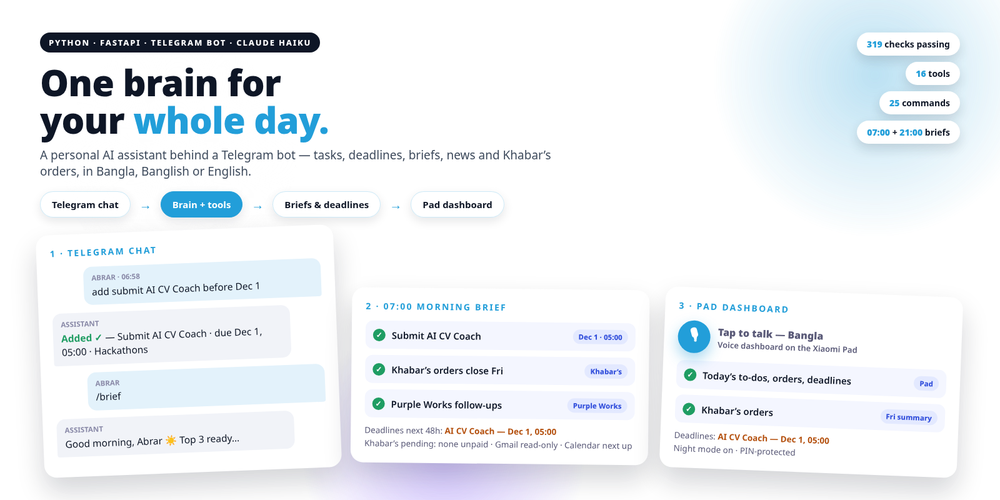
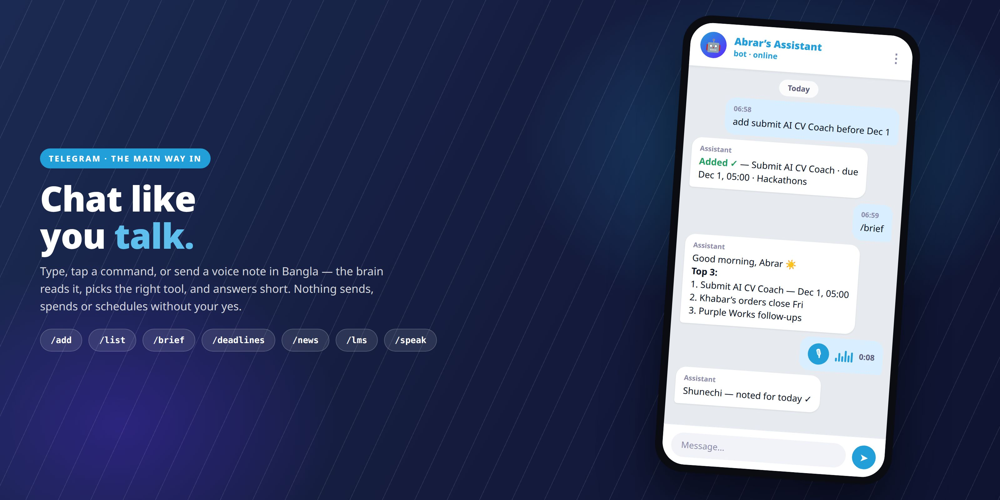
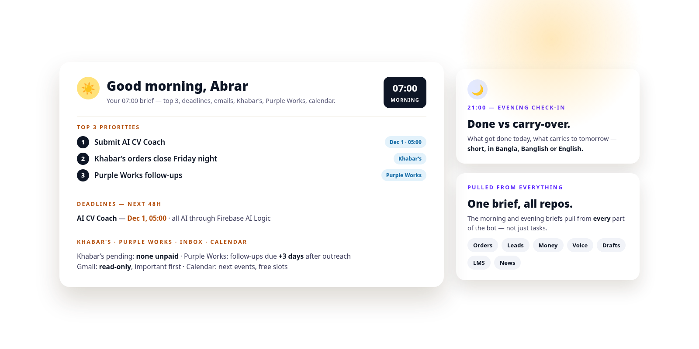
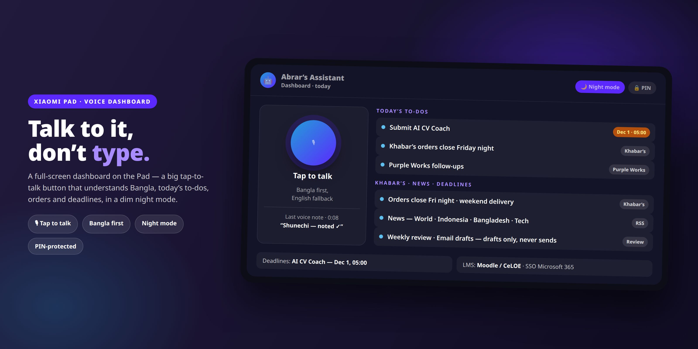
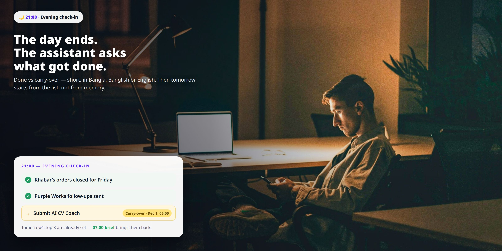
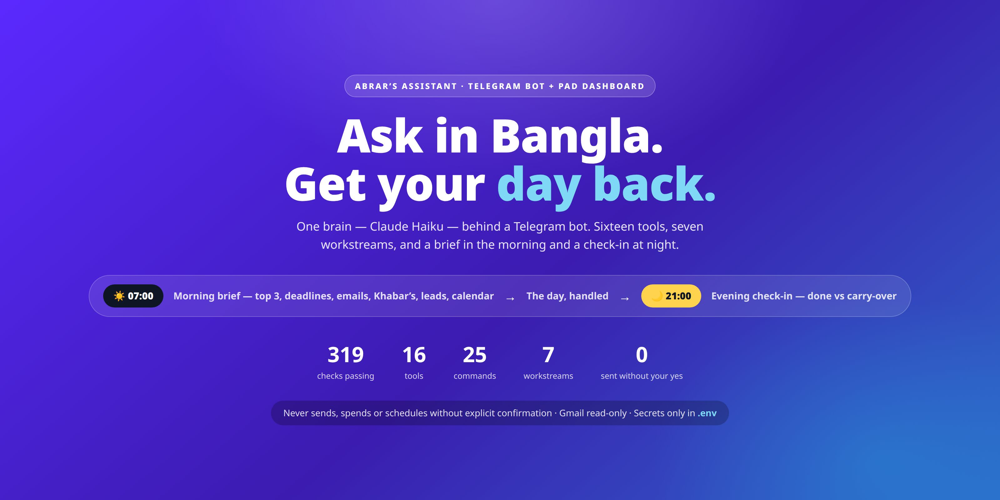
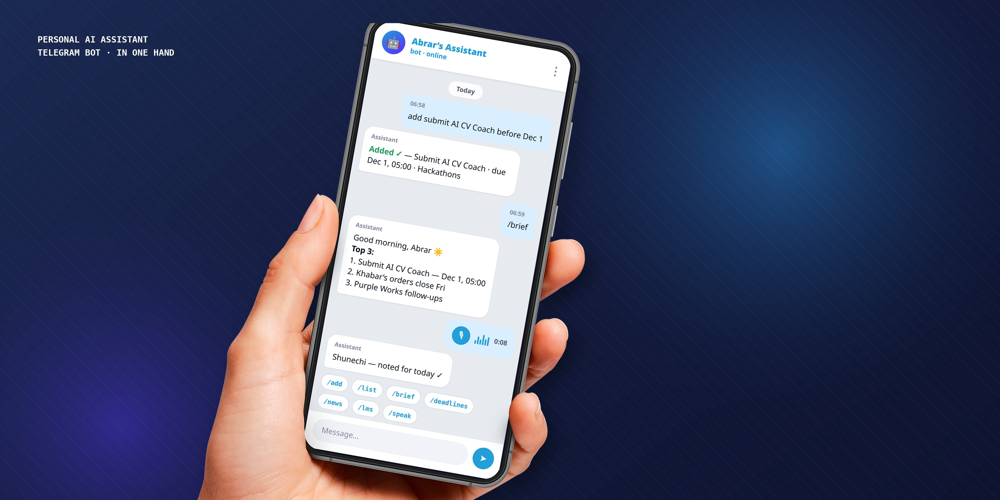

Personal AI assistant
My own assistant, behind a Telegram bot — it keeps my tasks, deadlines, briefs, news and Khabar’s orders in one place, and answers in Bangla, Banglish or English.
Who this is for: me — one place for tasks, deadlines, briefs, news and orders, instead of seven workstreams in seven places.

Everything I had to remember lived somewhere else.
Deadlines live in the LMS, orders and leads each live somewhere else, and follow-ups live in my head. Every morning started with catching up — checking each place before the day could start.
Three steps
Say it in chat
Type, tap a command, or send a voice note in Bangla. /add, /brief, /deadlines, /news, /lms, /speak.
The brain picks the tool
Claude Haiku reads the message and picks one of 16 tools — tasks, LMS, Gmail, news, orders.
It answers short, and waits for yes
Replies stay short. Nothing sends, spends or schedules without explicit confirmation.
Built to be relied on
It never sends without my yes
Email drafts only, never sends. No message, no spend, no schedule without explicit confirmation.
Gmail stays read-only
It reads important mail first and drafts replies. It never sends anything itself.
Secrets stay in .env
No keys or tokens in the code, the chat or any screenshot. Secrets live only in .env.
One chat runs the day — briefs, deadlines, orders and news.
The numbers come from the bot itself: 319 checks passing, 16 tools, 25 commands, two briefs a day.
Screens
Top 3:
1. Submit AI CV Coach — Dec 1, 05:00
2. Khabar’s orders close Fri
3. Purple Works follow-ups
All seven photos







Want something like this?
Tell me about your project. I reply within one working day.